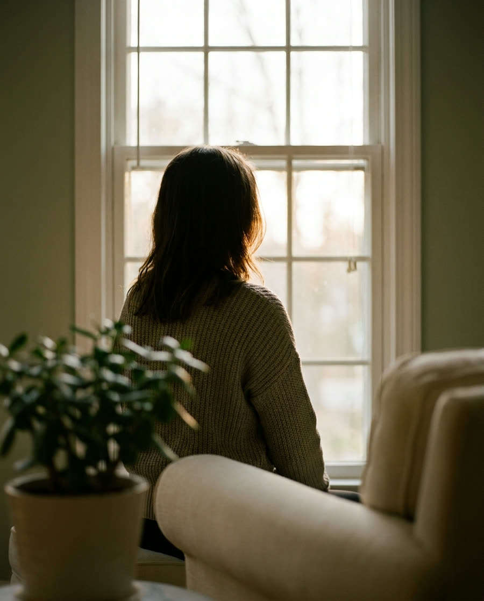
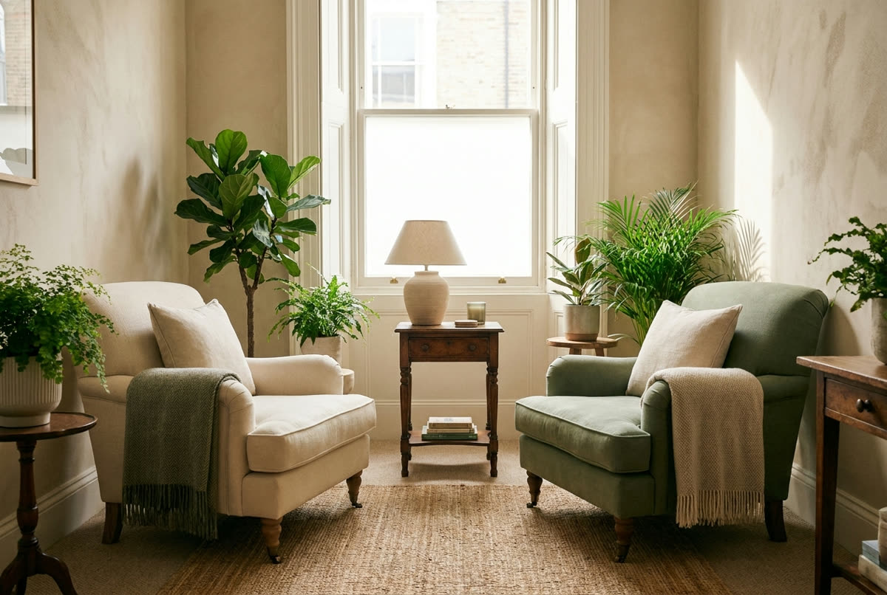
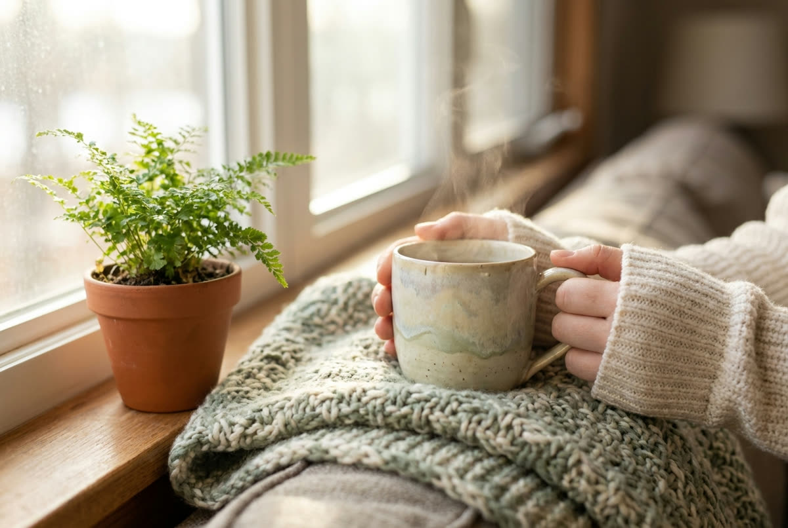

Atravesar la ansiedad, reconstruir tu autoestima y volver a respirar. Por videollamada, estés en Bogotá, Medellín o donde estés. A tu ritmo.

“Pedir ayuda no es rendirse.
Es el primer acto de valentía.”
Aquí no estás solo. Este es tu espacio para hablar, respirar y volver a ti.
Treinta segundos. Sigue el círculo: se hincha cuando inhalas, se encoge cuando exhalas. Así se siente venir a terapia.
Inhala 4 s · sostén 2 s · exhala 6 s

Psicóloga con tarjeta profesional Nº [XXXX] (Colpsic), especializada en ansiedad, autoestima y acompañamiento en momentos de cambio. Llevo más de [X] años acompañando a personas a reencontrarse consigo mismas.
Mi forma de trabajar es cercana y sin prisas: aquí no hay recetas ni juicios, solo un espacio tuyo para entender lo que te pasa.
— Angélica
Recupera la calma cuando el cuerpo se acelera.
Una relación más amable y firme contigo.
Sostener la tristeza y volver a habitar tu vida.
Pon límites sanos y comunícate desde lo que necesitas.

Me cuentas cómo estás. Sin compromiso.
Una videollamada gratuita de 15 minutos, desde donde estés.
Un plan a tu medida, sesión a sesión.
Escríbeme y hablamos. Sin compromiso, a tu ritmo. Estoy aquí para acompañarte.
Primera toma de contacto gratuita · Confidencial · Videollamada en toda Colombia
© 2026 Angélica Giral · Psicología online · Un viaje de vuelta a ti